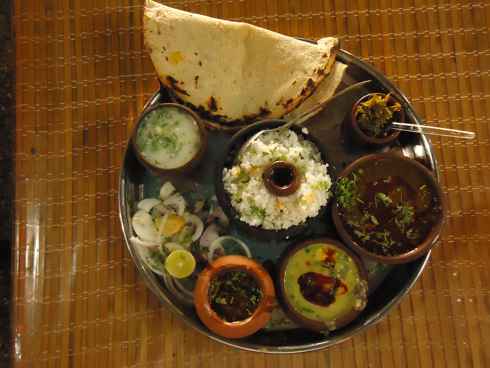

Misal Pav

Ingredients:
- 1 cup wheat flour
- ▢1 cup coarse wheat flour
- ▢Salt to taste
- ▢1 tbsp cumin seeds
- ▢2 tbsp sesame seeds
- ▢½ tsp asafetida - hing
- ▢½ tsp ajwain
- ▢1 tsp turmeric powder
- ▢1 tbsp red chilli powder
- ▢1 tbsp coriander powder
- ▢½ tsp garam masala
- ▢¼ cup coriander leaves
- ▢6 tbsp oil
- ▢¾ cup water or as required
- ▢Ghee for roasting
Instructions:
- In a mixing bowl, combine wheat flour, coarse wheat flour, and salt.
- Crush cumin seeds, white sesame seeds, and ajwain using a rolling pin and add them to the flour mixture.
- Add hing, turmeric powder, red chilli powder, coriander powder, garam masala, and chopped coriander leaves.
- Pour in the oil and mix everything well with your hands. The flour should have a crumbly texture and bind together when pressed between your hands.
- Gradually add water while kneading to form a tight dough for the bhakri.
- Cover the dough and let it rest for 10-15 minutes.
- Take a medium-sized portion of the dough and roll it out into a bigger-sized, medium-thick bhakri.
- Use a small-sized lid to cut out bhakri pieces and repeat the process with the remaining dough.
- Heat a tawa or griddle on medium heat and place the rolled bhakri on it.
- Cook each portion of the bhakri dough on both sides until golden brown, applying light pressure using a wooden press to ensure even cooking.
- Cook the bhakhri on medium heat until golden brown spots appear on both sides.
- Apply some ghee on both sides of the bhakhri and roast it for an additional 2 minutes to make it flakier.
- Serve the biscuit bhakhri immediately or store it in an airtight container.
Pav Bhaji
Ingredients:
- 4 potatoes, boiled and mashed
- 2 cups mixed vegetables (peas, carrots, bell peppers), boiled and mashed
- 1 onion, finely chopped
- 2 tomatoes, chopped
- 2 cloves of garlic, minced
- 1-inch piece of ginger, minced
- 2-3 green chilies, chopped
Instructions:
- Heat oil in a pan and add chopped onions. Sauté until they turn golden brown.
- Add minced garlic, ginger, and green chilies. Sauté for a minute.
- Add chopped tomatoes and cook until they turn mushy.
- Add mashed potatoes, mashed vegetables, pav bhaji masala, and salt. Mix well.
- Simmer for 10-15 minutes, adding water as needed. Mash everything together.
- Serve hot with buttered pav (buns) and chopped onions.